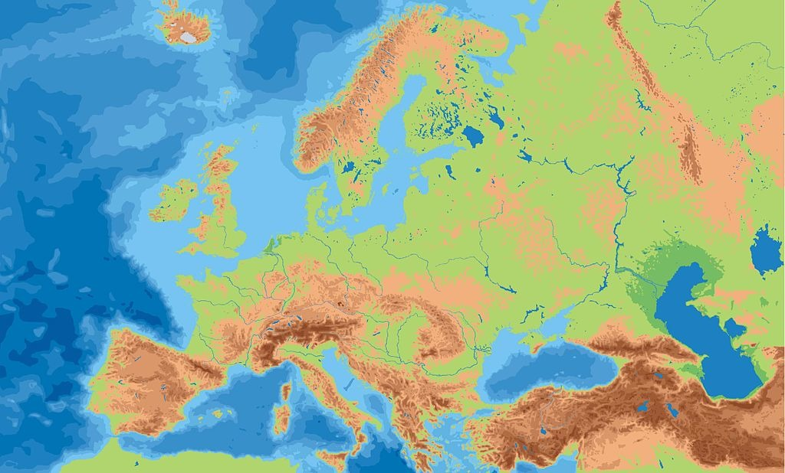
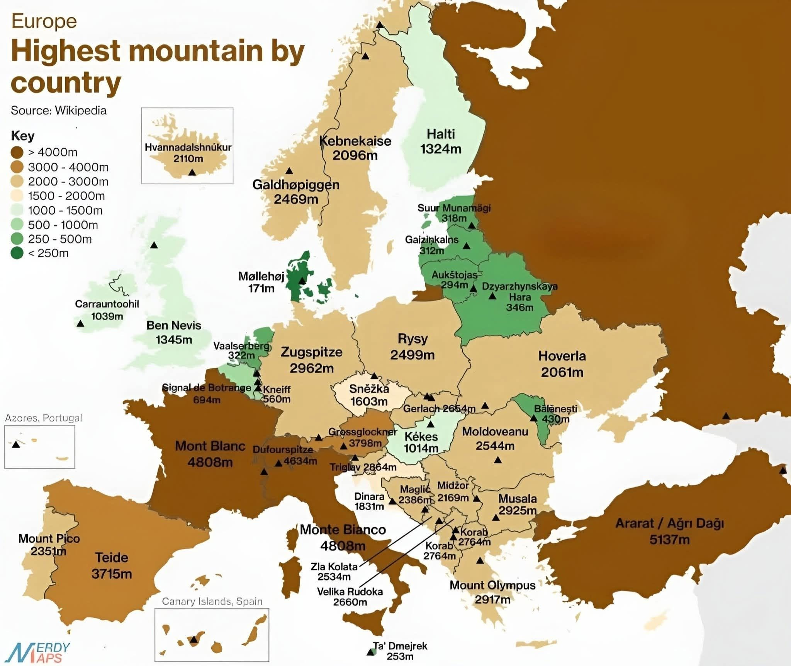

Európa legmagasabb csúcsai
A Mount Elbrus, a Mont Blanc és a Dufourspitze Európa leghíresebb és legmagasabb hegycsúcsai közé tartoznak.
Főbb összehasonlítások: Mount Elbrus: Az oroszországi Kaukázusban található, 5642 méter magas kialudt rétegvulkán, amelyet a "Hét Hegycsúcs" (Seven Summits) meghatározás szerint Európa legmagasabb hegyeként tartanak számon.
Mont Blanc: A francia-olasz határon emelkedő, 4808 méter magas csúcs az Alpok és egyben Nyugat-Európa legmagasabb pontja.
Dufourspitze: Svájcban, a Monte Rosa-masszívumban található 4634 méteres magasságával.


| Elbrusz | 5642m |
| Mont Blanc | 4808m |
| Dufourspitze | 4634m |
| Dom | 4545m |
| Weisshorn | 4506m |
| Matterhorn | 4478m |
Érdekességek Európa legmagasabb csúcsairól
A Mont Elbrusz a Kaukázusban található, és 5642 méteres magasságával magasabb a Mont Blanc-nál. Két fő csúcsa van, amelyek közül a keleti csúcs valamivel alacsonyabb. A hegyet hó és jég borítja.
A Mont Blanc az Alpok legismertebb csúcsa, magassága körülbelül 4808 méter. A hegy a francia–olasz határvidéken található. Környéke népszerű a hegymászók, túrázók és síelők körében.
A Dufourspitze Svájc legmagasabb pontja, 4634 méter magas. A Monte Rosa-hegységben található, a svájci–olasz határ közelében.
Az Alpokban több 4000 méter feletti hegycsúcs található. Ezek főként Svájc, Olaszország és Franciaország területén helyezkednek el.
A magashegységekben a hőmérséklet a magassággal csökken, ezért a legmagasabb csúcsokon gyakran egész évben hó és jég található.
A hegyek fontos szerepet játszanak a vízkörforgásban, mivel sok folyó forrásvidéke a magashegységekben található.
A hegyvidékek élővilága is különleges. A magasság növekedésével változik a növényzet.
A magas hegyek fontos szerepet töltenek be a turizmusban is.
A hegyek nemcsak természeti értékek, hanem földrajzi határok is lehetnek.
↑ Top